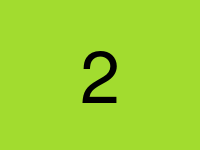

Questa pagina esiste per una prova sola: che l'impaginato disegni gli stessi pixel quando i moduli, le immagini e gli script escono da lui e passano da due ganci. Ogni cosa che l'impaginato non sa misurare da se' deve stare qui.
fuori da ogni modulo:
con misura dichiarata:
senza misura:

che non c'e', si legge l'alt:
fine.